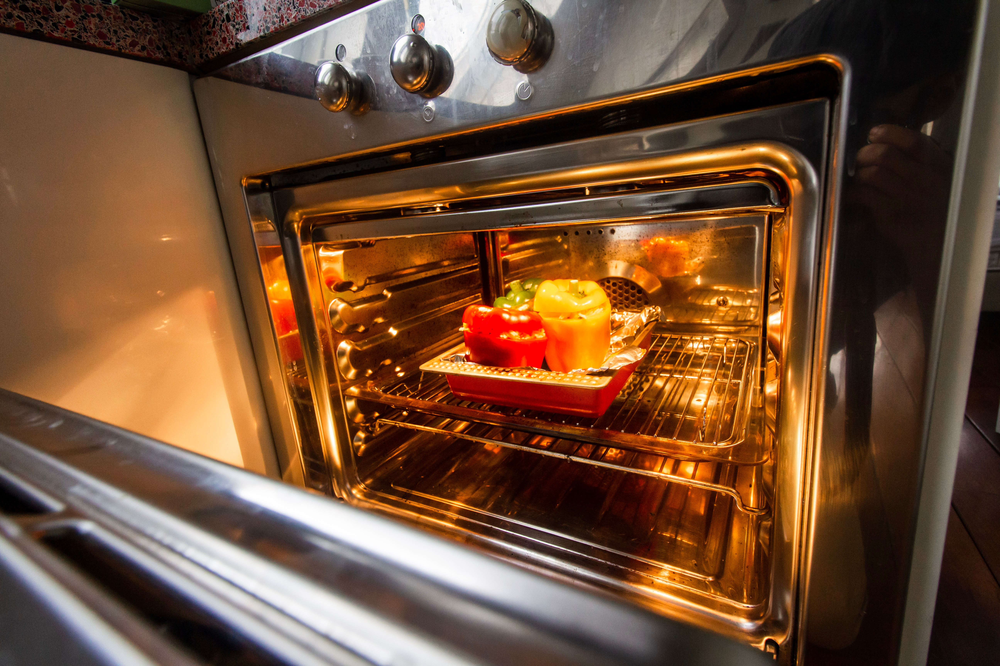

특성과 응용

우리가 살고 있는 주변 어디를 보나 전기와 전파에 관계되는 것이 많이 있다. 최근 들어 사회 · 경제활동이 정보화와 결합되면서 전파 이용 분야에 대한 수요가 매우 많아지고 있다. 특히 전파를 매체로 하는 무선통신은 시간과 거리를 극복하면서 즉시 정보를 전달할 수 있는 특성으로 인해 정보사회에서는 중요한 생활과 생산기반으로 되어가고 있다.

인간의 일상생활을 위한 가장 일반적인 전파이용은 방송 분야입니다. 중파, 단파, FM, TV, 위성을 통해 가정, 직장을 비롯한 모든 장소에 교양, 오락, 음악, 경제 등에 관한 다채로운 내용을 음성과 영상으로 제공함으로써 우리 생활을 윤택하게 해준다. 통신, 방송 이외에도 사회적으로 중요한 국가조직, 구급, 소방, 경찰, 방제 등의 공공기관과 의료, 해상교통, 육상 운송분야의 많은 공익단체에서도 전파가 정보 전달수단으로서 중요한 역할을 하고 있다.

의료분야에서도 골절, 신경통, 암 등의 치료에 전자파 이용이 증가하고 있다. 또한 고주파 가열장치, M/W 전력전송 등의 에너지분야, 원격 탐사, 관측, 계측 등에서도 전파가 이용되고 있다. 목재나 비닐, 종이 제조 공정의 건조나 가열에도 전파가 이용되고 있고, 종합 교통정보 시스템, 속도 측정, 레이다(추적, 탐색, 기상 등), 전파천문학 분야에도 쓰이고 있다. 무선식별 장치, 원격 제어 장치, 안전 시스템, 응급 구조 시스템 등에도 무선기기가 유용하게 활용되고 있다.